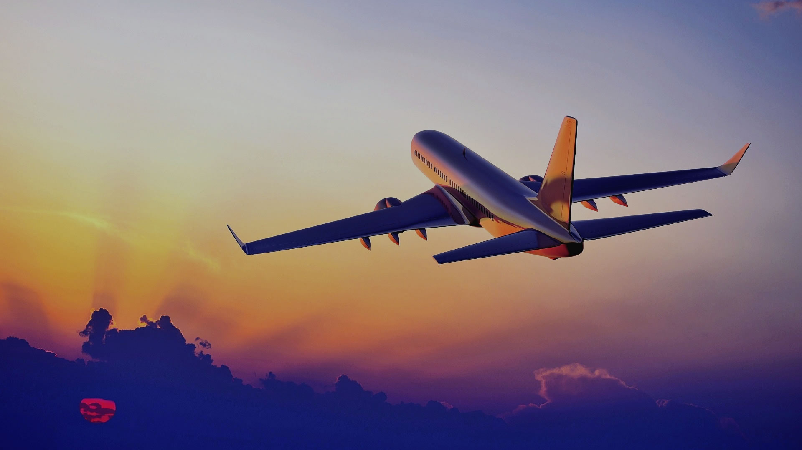

Informações
Viajar é experimentar o mundo. É dar chance para conhecer o desconhecido, mesmo que este desconhecido seja você mesmo.Quando viajamos exercitamos o pensamento, a paciência, o novo. Passamos a aceitar melhor as diferenças, as nossas diferenças.Viajar é uma terapia!
UMA VIAGEM PODE TRANSFORMAR UMA VIDA!
Não é preciso pegar um avião, viajar quilômetros ou gastar fortunas. Acreditamos que qualquer deslocamento, desde que feito com a mente e o coração abertos, podem promover mudanças.
Mas por que é realmente preciso? Muitos acham que viajar é preciso para fugir da realidade, para esquecer os problemas do dia-a-dia, para descansar. Ok, de fato, para alguns, até pode ser. Mas, para mim, é uma maneira de me encontrar.
De entrar em contato com sentimentos profundos, de descobrir, de aprender e ver o que nunca imaginei que existia.
Viajar é preciso porque saímos do nosso mundo e vemos outras possibilidade de ser e ter. Outras realidades, outras maneiras, outros costumes, outros, outros, outros.
E isso contribui para sermos menos preconceituosos, sermos mais humildes e mais empáticos com o próximo.
Viajar é preciso porque o mundo é muito maior do que você imagina e milhões de coisas você só poderá sentir, tocar ou experimentar, se sair da sua bolha e experimentar ir. Simplesmente ir.
Viajar é preciso porque te enriquece. Você gasta dinheiro mas ganha em todos os sentidos: mentalmente, visualmente, energeticamente, organicamente. Viajando você se propõe a conhecer e viver coisas e situações que contribuem para seu crescimento pessoal e experiência de vida.
Viajar é preciso porque não parece ser muito interessante viver sempre as mesmas coisas, nos mesmos lugares, comer as mesmas comidas, ouvir a mesma língua, sentir os mesmos cheiros.
Viajar é preciso, pois, estando ausente, você aprende a dar valor a tudo aquilo que na sua rotina é normal. Você sente falta do seu travesseiro, da comida de um parente, da voz de alguém especial, do seu banheiro, da sua casa. Viajando você aprende a dar mais valor ao que geralmente não sente falta.
